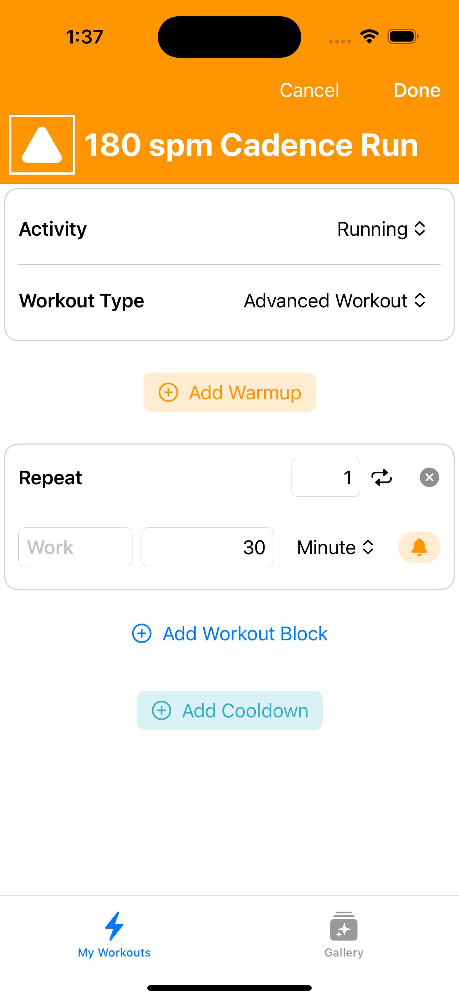

How to use Apple Watch to Improve Your Run Cadence
This guide will help you set up alerts for running cadence that you can use to monitor your steps per minute while doing a workout on Apple Watch.
Why change your running cadence?
Improving your running cadence can offer several benefits: it helps prevent injuries, increases efficiency, potentially improves speed, enhances overall form, and reduces the likelihood of overstriding. These factors can contribute to a more effective and sustainable running practice.
What you’ll need
- An iPhone running iOS 17 or later
- An Apple Watch running watchOS 10 or later
- The free Workout Builder App to set up workouts
Instructions to create running cadence alerts for Apple Watch workouts
Step 1 – Open the Workout Builder App and tap the + button to create a new workout
Step 2 – Change the Workout Type to Advanced Workout
Step 3 – Tap Add Workout Block and choose Work Block
Step 4 – Enter your Goal – either distance or time for your workout
Step 5 – Then, tap the Bell Icon alerts button to open the alert editor
Step 6 – Tap Add Alert, then change the Alert Type to Cadence Range
Step 7 – Enter your desired lower and upper cadence thresholds in the fields, then tap Done
Step 8 – Tap Done to save your new workout
Step 9 – Tap Send to Apple Watch to load the workout onto your paired Apple Watch